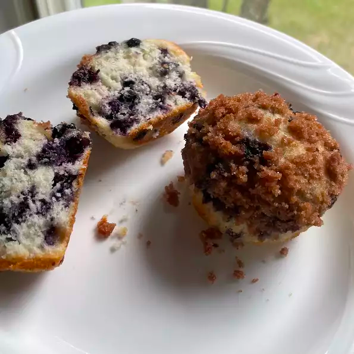

Blueberry Muffins

These muffins are extra large and yummy with the sugary-cinnamon crumb topping. I usually double the recipe and fill the muffin cups just to the top edge for a wonderful, extra-generously-sized, deli-style muffin. Add extra blueberries too, if you want!
A breakdown of the time required for this recipe is below, along with servings.
- Prep: 15 mins
- Cook: 25 mins
- Total: 40 mins
- Servings: 8
- Yield: 8 large muffins
Nutritional Information
|
|
% Daily Value * |
| Calories: |
383 |
19% |
| Protein: |
4.3g |
9% |
| Carbohydrates: |
56.9g |
18% |
| Dietary Fibre: |
1.4g |
6% |
| Sugars: |
33.6g |
140% |
| Fat: |
16.1g |
25% |
| Saturated Fat: |
5.2g |
26% |
| Cholesterol: |
39.3mg |
13% |
| Vitamin A: |
238IU |
5% |
| Niacin Equivalents: |
2.7mg |
20% |
| Vitamin C: |
1.8mg |
3% |
| Folate: |
57.2mcg |
14% |
| Calcium: |
94.6mg |
10% |
| Iron: |
1.7mg |
9% |
| Magnesium: |
10mg |
4% |
| Potassium: |
72.7mg |
2% |
| Sodium: |
321.8mg |
13% |
| Thiamin: |
0.2mg |
24% |
| Calories From Fat: |
144.8 |
*Percent Daily Values are based on a 2,000 calorie diet. Your values may be higher or lower depending on your calorie needs.
Ingredients
Muffins
- 1 1/2 cups (~188g) all-purpose flour
- 3/4 cup (150g) white sugar
- 2 teaspoons (~9.6g) baking powder
- 1/2 teaspoon (~2.8g) salt
- 1/3 cup (80ml) vegetable oil
- 1 egg
- 1/3 cup (80ml) milk, or more as needed
- 1 cup (~148g) fresh blueberries
Crumb Topping
- 1/2 cup (100g) white sugar
- 1/3 cup (~42g) all-purpose flour
- 1/4 cup (~55g) butter, cubed
- 1 1/2 teaspoons (~4.1g) ground cinnamon
Directions
- Preheat the oven to 400 degrees F (200 degrees C). Grease 8 muffin cups or line with muffin liners.
- Whisk flour, sugar, baking powder, and salt together in a large bowl.
- Pour oil into a small liquid measuring cup. Add egg and enough milk to reach the 1 cup (250ml) mark. Stir until combined. Pour into flour mixture and mix just until batter is combined. Fold in blueberries. Set batter aside.
- Combine sugar, flour, butter and cinnamon for crumb topping in a small bowl. Mix with a fork until crumbly.
- Spoon batter into the prepared muffin cups, filling right to the top. Sprinkle with crumb topping.
- Bake in the preheated oven until a toothpick inserted in the center of a muffin comes out clean, 20 to 25 minutes.
If using a 12 cup (~460g) muffin pan, you will have 4 empty cups. Add 1 tablespoon (15ml) water to the empty spaces when baking. Muffins tend to burn faster in a pan with empty cups.
These muffins are best served with homemade butter